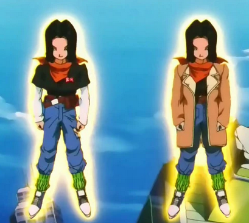

Curiosidades da Série Dragon Ball
O título

Dragon Ball Z é a sequência direta dos eventos de Dragon Ball, mas muita gente se pergunta qual é o motivo
do título carregar a letra Z.
Muitos fãs afirmam que o nome é Dragon Ball Z, pois Akira Toriyama pretendia que esse fosse o último
capítulo da saga.
Acontece que o criador da série intitulou o novo arco como Dragon Ball 2, mas os editores leram o título de
maneira errônea e interpretaram Dragon Ball Z.
O título errado agradou mais do que o verdadeiro e passou a ser adotado dali em diante.
O destino de Vegeta

Vegeta foi, certamente, o personagem que mais sofreu transformações ao longo da série.
Ele surgiu como um vilão impiedoso e orgulhoso, mas, aos poucos, foi se transformando em um anti-herói, até
se tornar um grande herói.
Originalmente, a ideia de Akira Toriyama era matá-lo depois de seu confronto com Gohan. Mas o público gostou
tanto do personagem, que os editores obrigaram Toriyama a mantê-lo vivo para que ele tivesse sua revanche
com Goku.
A preguiça do criador de Dragon Ball

No início da saga, Goku possuía uma forma humana e uma animal, o gigante Oozaru.
Em sua forma humana, o personagem permanecia com sua cauda à mostra.
O motivo para o protagonista ter seu rabo cortado, foi pelo simples fato de que Toriyama tinha preguiça de
desenhá-lo todas as vezes.
Assim, era muito mais prático eliminar o membro. O mesmo aconteceu com a transformação em Super Saiyajin.
Nos mangás, o cabelo de Goku dava muito trabalho para ser desenhado e, principalmente, preenchido de preto.
A transformação em Super Saiyajin deixava os traços mais simples e dispensava a coloração.
O protagonismo de Gohan

Se analisarmos o desenvolvimento da trama, percebemos que o anime dava todos os indícios de que Gohan
acabaria se tornando o protagonista de Dragon Ball Z.
Desde a luta contra Raditz, até a saga de Cell, vemos uma evolução absurda do personagem. Além do mais,
sempre fica subentendido que o primogênito de Goku possui um incrível poder guardado em seu interior.
Akira Toriyama já tentou, por diversas vezes, matar Goku e passar o protagonismo a outro personagem, mas os
produtores, e principalmente o público, não admitem que o personagem seja deixado para trás. Por isso, o
criador se vê obrigado a trazê-lo de volta de maneiras mirabolantes e colocá-lo sempre no centro da
história.
O exterminador do futuro

Akira Toriyama é conhecido por tirar inspiração para seus trabalhos de diversas outras obras.
Não é surpresa que a saga dos androides tenha sido inspirada em nada menos que O Exterminador do Futuro.
As duas histórias começam com um viajante do tempo, que volta ao passado para avisar aos protagonistas de
que o futuro está um caos devido a uma inteligência artificial fora de controle. Os robôs dominam o planeta
e praticamente exterminaram a raça humana, mas tudo isso pode ser evitado caso uma única pessoa sobreviva.
Para deixar a homenagem ainda mais clara, T-800 foi mandado para matar Sarah Connor no dia 12 de maio.
Quando Trunks do futuro conversa com os outros Guerreiros Z, ele diz que os ataques começam no dia 12 de
maio.
A maior luta de todos os tempos

O momento tornou-se uma grande piada na internet, mas é um fato: a luta entre Goku e Freeza é a mais longa
da história dos animes.
Dividido entre diversos episódios, o confronto tem uma duração total de 4 horas e 13 minutos.
Ou seja, se a batalha fosse levada para os cinemas, precisaríamos de dois filmes somente para vê-los lutar.
Eita, cinco minutos demorados!
Reproveitando as cenas
Não se sabe bem ao certo se foi uma homenagem ou apenas um reaproveitamento de frames.
O fato é que, quando Gohan e Super Buu se preparam para lutar, ambos fazem as mesmas poses que Goku e Vegeta
fizeram da primeira vez que se enfrentaram.
Lunch
A personagem surgiu em Dragon Ball.
Trata-se de uma bela e tímida garota com uma particularidade interessante: toda vez que espirra, Lunch se
transforma em uma maníaca criminosa.
Ela jamais foi vista novamente no mangá, mas apareceu em algumas ocasiões nos episódios filler de Dragon
Ball Z.
O motivo? Akira Toriyama simplesmente se esqueceu dela. E não foi a primeira vez!
O mangaká já afirmou que, diversas vezes, some com alguns personagens durante a trama, porque simplesmente
não se lembra deles!
O desmaio
Dragon Ball Z é conhecido por seus intensos gritos, principalmente durante os golpes e transformações.
Durante uma sessão de perguntas e respostas, o dublador americano do Goku, Sean Schemmel, revelou que
desmaiou em pleno estúdio de gravação, de tanto esforço necessário para fazer o grito da transformação do
personagem em Super Saiyajin 4.
Segundo Sean, por mais que não gostem de admitir, os outros dubladores já passaram pelo mesmo problema
durante as gravações de outras cenas.
A misteriosa vida sexual dos namekuseijins

Não existe diferenciação entre macho e fêmea na raça Namekuseijin. Todos eles se reproduzem de forma
assexuada, expelindo um ovo pela boca.
Além disso, os Namekuseijins se desenvolvem mais rapidamente que as outras raças. Justamente por isso,
Piccolo já possui o físico de um adulto humano quando enfrenta Goku no Torneio de Artes Marciais, mesmo que
tenha apenas três anos de idade.
Ainda assim, fica um mistério: Por que Dendê demorou muito mais que Piccolo para crescer?
Bom, provavelmente Akira Toriyama se esqueceu da regra que ele mesmo havia inventado!